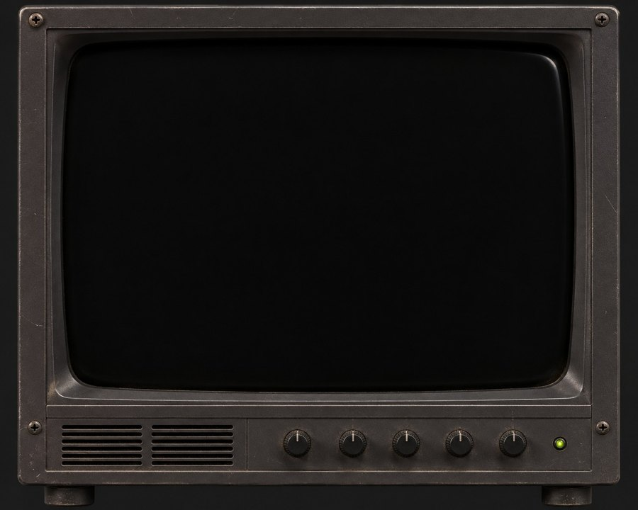
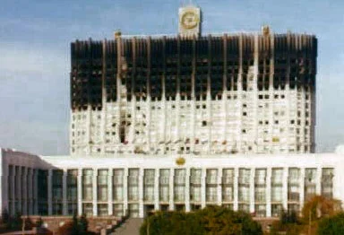
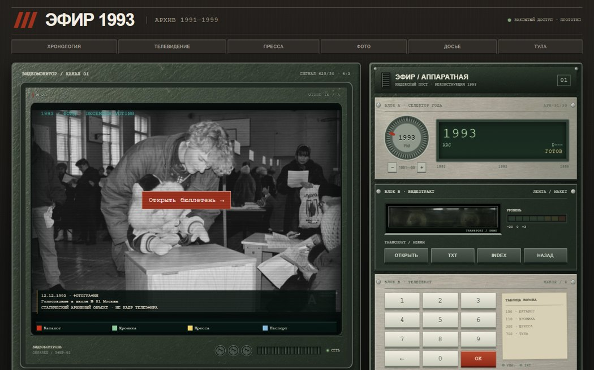
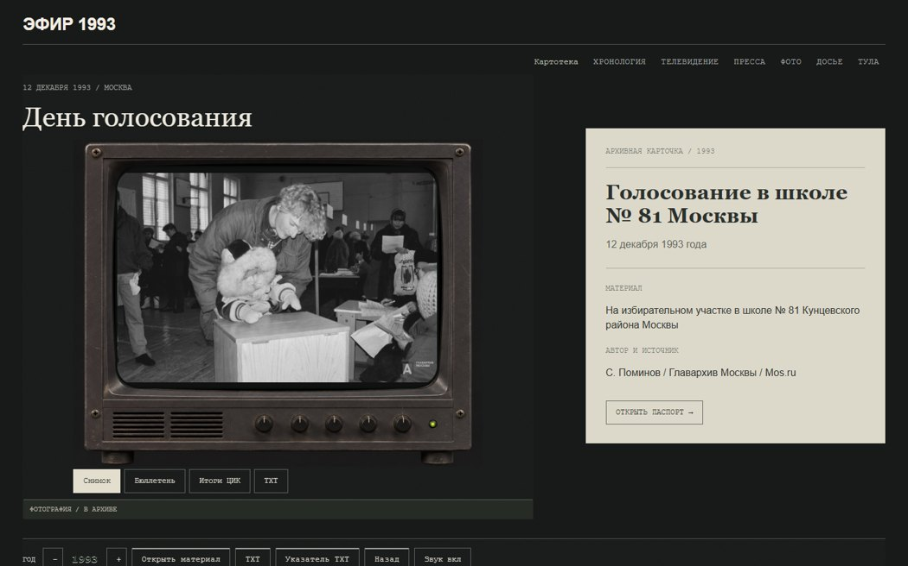
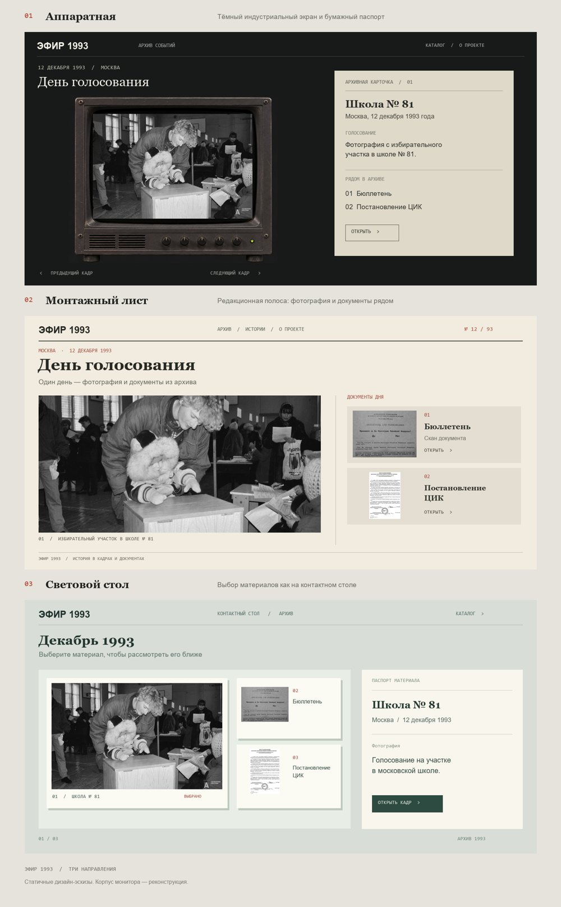

Москва / Октябрь, день неизвестен
Кто снял этот дом?
Автор публикации рассказывает, что во время поездки в Москву дом сфотографировал его отец. У московской кинохроники того же месяца другая история.
Один месяц в семейном фотоархиве, автомобильном журнале и тульской вечерней газете.


Автор публикации рассказывает, что во время поездки в Москву дом сфотографировал его отец. У московской кинохроники того же месяца другая история.
В октябрьском номере «За рулём» напечатали таблицу цен на запчасти. Составитель указал месяц замера и курс доллара. Эти две подписи меняют смысл каждой цифры.
В «Туле вечерней» С. Гончаров писал о театре и просил туляков его поддержать. Фрагмент статьи сохранился в краеведческом дайджесте.
Семейный снимок датирован октябрём. Для киносъёмки известен интервал 4–7 октября. Общий вид здания связывает материалы, точный день снимка остаётся открытым.
Редакция приводит июльские московские цены в октябрьском номере. Курс 1100 рублей за доллар относится к пересчёту в журнальной таблице.
16 октября вышла статья Гончарова. Библиотека позднее включила выдержку в дайджест. Саму газетную полосу ещё предстоит найти.
Я бы сохранил профессиональную аппаратную и сменил единицу навигации. Открывать стоит выпуск с собственным вопросом. Каталог нужен в тот момент, когда хочется посмотреть, какие ещё материалы есть у одного автора, города или издания.
11 ноября в чате «Идеи проекта сайта» прозвучала просьба усилить реализм техники, вплоть до использования фотографий для фактур. После раннего макета аппаратуры автор предложил наполнять архив. В версии 0.19 появились десять записей, шесть изображений и три привязки текста к сканам. Первая коллекция посвящена 1993-му, общий замысел охватывает 1991–1999 годы. Идеи проекта сайта · План закрытого пилота
13 ноября в личной сборке стало 12 записей. Автор отдельно попросил пересмотреть типографику, текстуры и компоновку. 14 ноября он выбрал первый из трёх эскизов, «Аппаратную». Отзыв о собранной после этого версии в найденном обсуждении отсутствует. Спланировать проект сайта · Сравнение макетов сайта


Фотография школы № 81 на экранах и исходных эскизах — С. Поминов, Главархив Москвы / Mos.ru. CC BY 4.0. Изображение уменьшено в составе снимков интерфейса. Корпус телевизора — реконструкция из проекта.
В старом листе во всех вариантах одно и то же изображение и два документа. Это удачный эксперимент — разница действительно возникает за счёт композиции.
Тёмный фон, тяжёлый корпус и светлая лампа дают объект, к которому хочется подойти. Слабое место — высокая цена пустого экрана: если предмет доступен только по ссылке, весь телевизор занимает служебное сообщение. Для печати в таких случаях я бы выводил проверенную строку с явной пометой «Выписка», а рядом давал переход к полосе. Для видео — продолжительность и глагол «Смотреть».
Здесь лучше всего работают масштаб фотографии и соседство документов. Глаз видит связь раньше, чем читает инструкцию. Я бы взял этот приём для раскрытого выпуска. Светлый фон, цельный скан и подпись у того места, о котором идёт речь. Карту материала и закрытие — всегда под рукой.
Ровный свет и отдельные отпечатки располагают к сравнению. На эскизе это пока выбор одной карточки, а история выбора исчезает при следующем нажатии. Смысл появится, когда можно положить рядом два предмета, увеличить каждый отдельно и одним движением вернуться в выпуск. На узком экране — переключать закреплённую пару с сохранением масштаба каждого предмета.

«За рулём». На страницах 10–11 октябрьского номера В. Субботин приводит цены на июль 1993 года. Таблица пересчитана в доллары. В карточке нужны три поля — «Выпуск журнала», «Когда наблюдали цены», «В чём выражены». Иначе легко принять летний замер за октябрьскую цену и связать банкноту из архива с покупкой, которой источник не описывает. Журнальная статья
«Тула вечерняя». Старая карточка приписывает указатель Тульской областной научной библиотеке. На титуле стоит Центральная городская библиотека им. Л. Н. Толстого, отдел краеведения МУК «Тульская библиотечная система». Жанр — дайджест. Внутри есть выдержка из статьи Гончарова и библиографическое описание. Уже сейчас можно прочесть несколько строк с указанием, откуда они взяты. Для изучения верстки, соседних заметок и полной статьи нужна сама полоса. Дайджест «Лев Толстой на тульской сцене»
Октябрь. Три клавиши держат месяц и меняют наблюдателя. Сначала — семейный снимок повреждённого Дома Советов. Затем — таблица для владельца машины. Третья клавиша переводит в Тулу, где вечерняя газета печатает материал о театре. Связь редакционная: три следа одной эпохи. На экране у каждого свой город, дата и вид источника. Открыть дизайн-пробу
Сентябрь. На одном развороте — указ № 1400 и заключение Конституционного суда от 21 сентября. Слева читатель видит, какое решение было объявлено. Справа — как его оценил другой институт. Выдержки подбирать после сверки текстов. Хорошей подписью будет одна содержательная фраза с переходом к обоим документам. Указ · Заключение суда
Декабрь. Самый законченный маршрут остаётся короткой историей для первого знакомства. Сначала рассматриваем снимок С. Поминова. Затем открываем вопрос на бюллетене. На последнем шаге сравниваем с постановлением ЦИК от 20 декабря. Выход из документа возвращает к месту в рассказе. Декабрьский бюллетень в Президентской библиотеке, отдельный экземпляр
Сначала исправить две карточки и даты в хронологии. Затем провести один выпуск от включения аппаратной до чтения внешнего или встроенного оригинала. Приглушить металл вокруг кадра, оставить живую фактуру на корпусе; моноширинный шрифт использовать для дат и каналов, крупную антикву — для заголовка, обычный шрифт с удобной кириллицей — для чтения. На телефоне переключатели остаются перед кадром.
Проверка для личного проекта проста. Открыть ссылку на тульский канал, перейти к фрагменту, закрыть его, сопоставить даты и вернуться к тому же источнику. Для декабрьского выпуска — найти формулировку вопроса и итоговый документ без запоминания кода страницы. После этого собирать следующую историю. Добавление пустых лет, новых фактур и новых типов фильтров может подождать.
На снимке видны повреждения верхних этажей Дома Советов. Подпись автора загрузки датирует фотографию октябрём. Полный кадр из семейного архива позднее обрезали и скорректировали по цвету. В аппаратной показана эта обработанная версия.
У кинофрагмента три даты. Материал снят в Москве 4–7 октября 1993 года. Кадры вошли в фильм «Россия... Осень 93-го» 1994 года. В 2011 году Президентская библиотека выпустила подборку продолжительностью 2 мин 34 с. Карточка указывает эти даты. Для установления телевизионного показа понадобился бы программный лист или запись передачи.
В. Субботин в статье «Почем запчасти?» сравнивает коммерческие цены на московском рынке. Таблица относится к июлю 1993 года. Статья вышла в октябре на страницах 10–11.
Изменение цен автор оценивал в рублях. Для таблицы перевёл цены в доллары США из расчёта 1 доллар за 1100 рублей. Так редакция дала читателю возможность пользоваться номером через несколько месяцев, когда рублёвые цены могли измениться.
На экране аппаратной — современная наборная выписка. В архиве журнала можно сверить заголовок таблицы, единицы измерения и авторское пояснение.
16 октября 1993 года «Тула вечерняя» напечатала статью С. Гончарова «Таких бы театров, да побольше» о театре «У Толстовской заставы». В краеведческом дайджесте перед ссылкой на публикацию приведены слова автора.
«Ведь моральная, дружеская поддержка очень нужна этому театру».
Дайджест «Лев Толстой на тульской сцене» подготовил отдел краеведения Центральной городской библиотеки им. Л. Н. Толстого, МУК «Тульская библиотечная система». В PDF нужное место можно найти по фамилии и заглавию. Подлинная полоса пока отсутствует в коллекции.